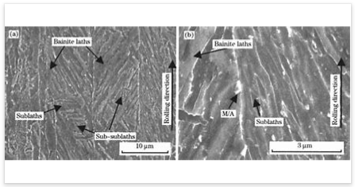
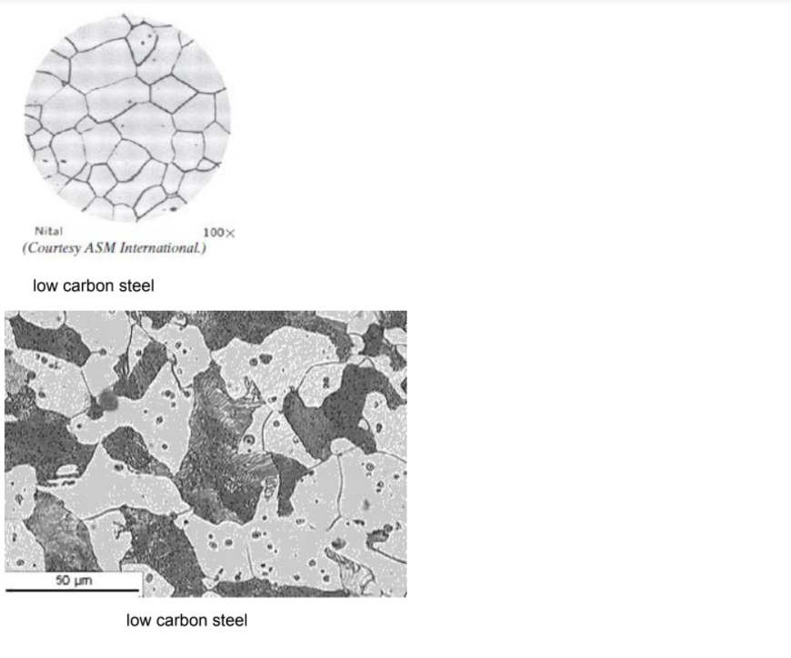
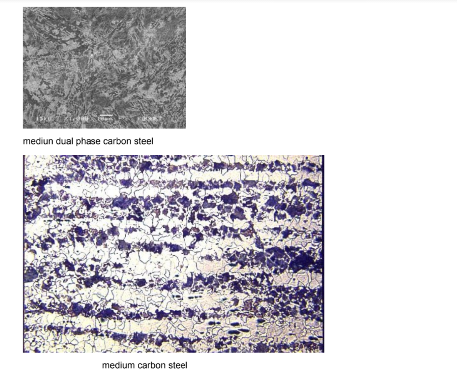
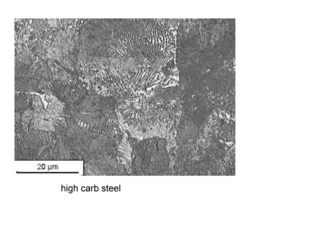
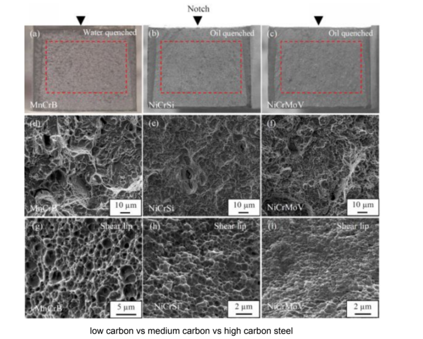

AIM of experiment 8
To perform Microstructural Analsis on cast iron specimens
Objective:
1. To observe and analyze the microstructure of carbon steel
2. To learn the effect of carbon weight percent on the microstructure of steel
3. To evaluate the percentage of phases present in the microstructure by using Lever Rule

PROCEDURE:
The preparation of carbon steels (metallic) or other materials for microscopic examination and microstructural characterization is in principal very simple.(speciemen preparation for metallographic analysis)
There are four basic processes that you will need to become familiar with:
-->Sample cutting and sectioning,
-->Metallographic mounting,
->Surface grinding and surface polishing.
Sample Cutting and Sectioning
Sectioning
Sectioning means removal of convenient size specimen from large sample with minimal damage to microstructure with the help of abrasive cut off machine. Abrasive cutting wheel/saw is attached to cutting machine and for work piece holding proper vice is provided on machine. The primary concern in this process is to minimize the heating of the sample due to the cutting. For this reason, the cut-off saws that is equipped with either water-cooling systems.
Metallographic Mounting
If sample is large enough (about 25 mm square or larger) than do not need to mount it, as it will be able to control the sample during polishing without a mount. For smaller samples there are two basic mounting techniques used in this laboratory. Mounting facilitates handling during preparation and handling. It also avoids damage to polishing wheels during polishing. The most common uses a thermosetting plastic compound (Bakelite) to encapsulate the specimen known as hot-mounting process, and the second uses a room temperature curing epoxy known as coldmounting process. The Bakelite mounting is by far the most common and easiest. The room temperature curing epoxy mount should only be used for samples that are extremely sensitive to heat.
The Bakelite process uses a sample mounting press that applies a pressure to the Bakelite/sample system during the cure to remove voids and gaps and to fully fill the sample spaces. Bakelite comes in a variety of colors, which can be combined to produce easy sample identification.
The procedure for Hot mounting process.
The following process is used to encapsulate your specimen in Bakelite:
1) Place sample face down on the small piston inside the press, and lower the piston into the cylinder by opening slightly the valve on the front of the press.
2) Approximately three tablespoons of Bakelite is poured over the sample, and the top of the press gently screwed into place. DO NOT TIGHTEN THE TOP OF THE PRESS. It is only necessary to engage all of the screw threads; you do not have to tightly secure the top.
3) The cylindrical heater is plugged in and turned on (the red light should turn on). Place the heater around the mold. The heater is thermostatically controlled and will heat the mold to about 135-150 °C. Close the valve, and pump up the cylinder using the hand lever. As the Bakelite heats, it will begin to flow to fill the void spaces, and the pressure will drop. Maintain the constant.
4) When the pressure stops rapidly dropping, the whole mold has reached 150°C. Begin timing for 5-7 minutes to fully cure the Bakelite. Maintain the pressure during the entire heating and cooling cycle.
5) At the end of the heating cycle, remove the heater and place the cooling collar on the mold for an additional 6-8 minutes.
6) Crack the valve to release the pressure, and unscrew the top of the mold. When the mold top is fully unscrewed (it may not come out due to adhesion with the Bakelite), close the valve and slowly pump up the cylinder to push the sample fully out of the press. Mark the sample on the back.
7) Clean any residual Bakelite off of the mold surfaces.
The procedure for Cold Mounting process
The following process is used to room temperature curing epoxy process:
1) Apply mold release agent to mold. Place specimen in the mold.
2) Mix epoxy powder and bonding liquid in 1:2 ration in a cup.
3) Pour into mo Id... wait for 10 minutes.
4) Eject the mold.
Sample Surface Polishing
The goal of the surface polishing is to end up with a planar cross section of sample free from scratches or disturbed metal introduced by the cutting and sectioning. This process is a step-wise process that can be broken into three loosely separate parts: grinding, coarse polishing, and final polishing.
Grinding
The first step in preparing your sample is to ensure that you have a flat surface to begin with. A water-cooled abrasive grinder is available to form a flat initial surface from which to begin. After getting a flat sample on the belt grinder, WASH sample thoroughly. The hand lapping station has four graded abrasive papers to produce a sequentially finer surface finish. Be sure the water is turned on and flowing uniformly over the abrasives. Start with the coarsest grit (240) and, using a firm and uniform pressure, slowly move the specimen forward and back across the abrasive. This will produce parallel scratches of uniform size. Continue this step until the entire surface of your sample is flat and contains only scratches of the size of 240 grit abrasive. When the sample is flat and the only scratches remaining are those due to the 240 grit abrasive, WASH your sample and your hands thoroughly, and move to the 320 grit abrasive. Repeat this procedure for the 400 grit and the 600 grit abrasive, checking after each step to be sure that only those scratches remain that are due to the smallest grit.
Rough Grinding
Before proceeding to the first polishing wheel (leftmost wheel), wash sample with water.
1) First, apply a small amount of water to the wheel, turn on the motor, and gently clean off the wheel with your fingers.
2) Apply a small amount of abrasive slurry to the wheel. This wheel uses an AI203 abrasive in a water suspension. The abrasive particles are 5 micrometers in diameter.
3) Carefully place your sample on the wheel while gripping it tightly. Slowly move the sample in a circular motion against the rotation of the wheel. Use a moderate and even pressure. It is important to ensure that you keep the sample flat on the wheel so that the final surface will be completely planar.
4) After several minutes on the wheel, hold the sample in one place for a moment. This will provide lots of parallel scratches that you can use to determine if you have removed the damage from the grinding steps.
5) Examine the sample under the microscope to determine if all the scratches are the same size.
6) Repeat steps 1-5 on the middle polishing wheel. This wheel uses a 0.3 micrometer A1203 abrasive in a water suspension.
Final Polishing
1) Repeat steps 1-5 above on the right polishing wheel. This wheel uses a 0.05 micrometer A1203 abrasive in a water suspension. At this point, the sample will be very smooth to the eye and even the oils and dirt on your fingers will scratch it with larger scratches than the abrasive. DO NOT TOUCH THE SAMPLE SURFACE FROM THIS POINT ON.
2) The last step in the process is to etch the sample to bring out the microstructure.
3) Use a cotton swab and a petri dish for the etching. Gently swab the surface of your sample with the etchant. Roughly spreading the etchant will scratch your surface. Let the etchant stand for 15 seconds or so and rinse the sample with water to stop the etching, and rinse again with methanol. Rinse the swab with water and throw into the trash bin.
4) Examine specimen under the microscope. You may require several etching steps to bring out the microstructure.
5) If the sample is over-etched, repeat the final polishing step and re-etch for a shorter time. Samples to be examined at high magnification generally require shorter etching times than those to be viewed at lower magnifications.
* After last polishing stage the sample looks mirror like.
Etching
Grains cannot be seen without etching. Cracks, pores and defects are observed without etching.
Etchant reacts with atoms and dissolves them. Atoms at grain boundaries dissolve quickly.
Dissolved grain boundaries appear dark.
Steps:
1) Apply enchant to polished surface for some time 16
2) Rinse with distilled water
Enchants:
1) 50/50 HCI: equal parts hydrochloric acid (HCI) mixed with water.
2) Alcoholic Ferric Chloride: 5 grams FeC13; 2 ml concentrated HCI acid; 95 ml methyl alcohol.
3) Aqueous Ferric Chloride: 10 grams FeC13; 20 ml concentrated HCI acid; 80 ml water.
4) Ammonia/Hydrogen peroxide: 1 part strong ammonia; 1 part hydrogen peroxide; 2 parts water; FRESHLY MADE.
5) Mixed acids: 95 ml water; 1.5 ml concentrated HCI acid; 2.5 ml concentrated nitric (HN03) acid; 0.5 ml hydrofluoric (HF) acid.
6) 2% Nital: 2 ml concentrated HN03; 98 ml methyl alcohol.
Metallographic Observation
Observe microstructure, Place specimen on metallograph and adjust magnification, focus and position s adjust micro High magnification - to study phases and Low magnification -to study grain size.
Microphotography
In this laboratory, you will report the microstructures of prepared samples(low ,medium,high crabonsteels) in specific formats.You will be expected to sketch the microstructure that you see under the microscope by hand. Insketching the microstructure there are several things to keep in mind. First, the magnification that you use depends upon the scale of the microstructure you are looking for. It is IMPORTANT to know in advance of the lab class what the expected microstructure for your samples are and at what scale they should appear. In sketching the microstructure, you should indicate only the important features of the structure that you observe-don't make a photographic reproduction of the microstructure. Simple sketches show that you know what the important structures are and have identified them in the cross section.
An example of what is considered to be a good laboratory report sketch of the microstructures is included in




Your sketch MUST INCLUDE:
1) The sample name and composition,
2) The metallurgical history of the sample,
3) A simple sketch of the important microstructure indicating
a) The magnification used (i.e. “MAG= 100 X”),
b) Important phases and features noted,
4) Etchant used.
1. Combined treatment (quenching + severe plastic de-formation by torsion under quasi-hydrostatic pressure (QHP)at 300 – 450°C) raises the microhardness of steel 45 as com-pared to the microhardness after tempering. The highest va-lues of HV and uniform distribution of microhardness overthe cross section have been obtained in the steel after QHP at350°C
2. QHP at 350°C promotes formation of nanocrystallinestructure in steel 45 with a mean size of ferrite grains ofabout 100 nm and cementite particles about 15 nm in size
3. After quenching for martensite and QHP at an elevatedtemperature steel 45 acquires a higher level of strength(sr> 2500 MPa) and microhardness (HV > 10,000 MPa)than after quenching or after normalizing and QHP. Somelevel of ductility (d> 3%) is preserved.